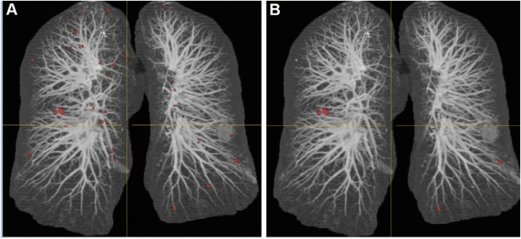
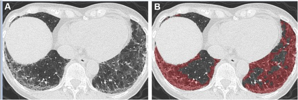
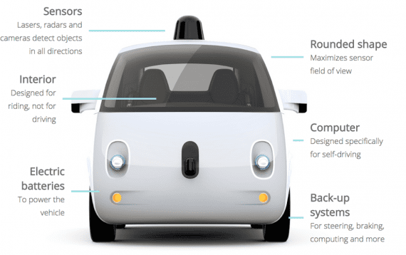
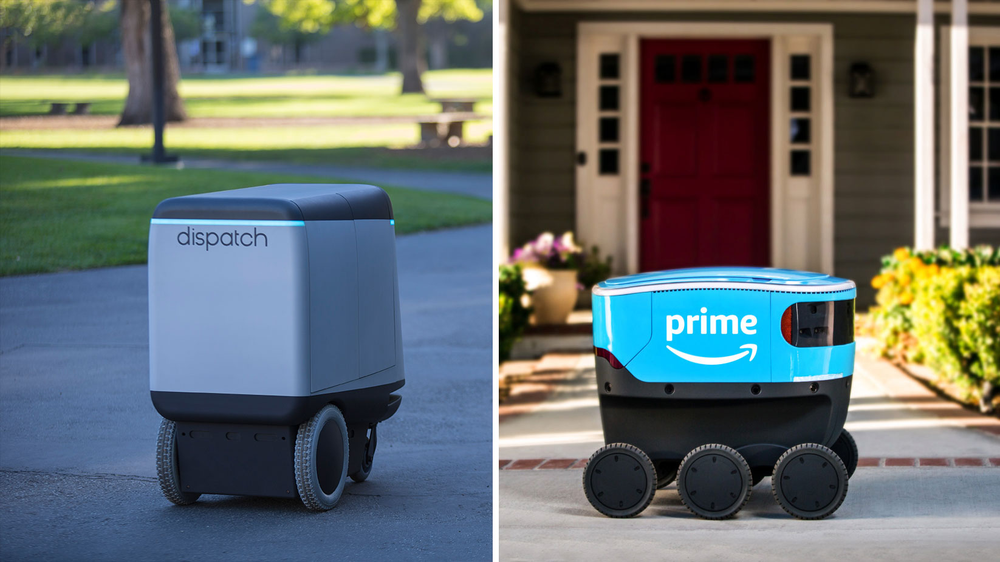
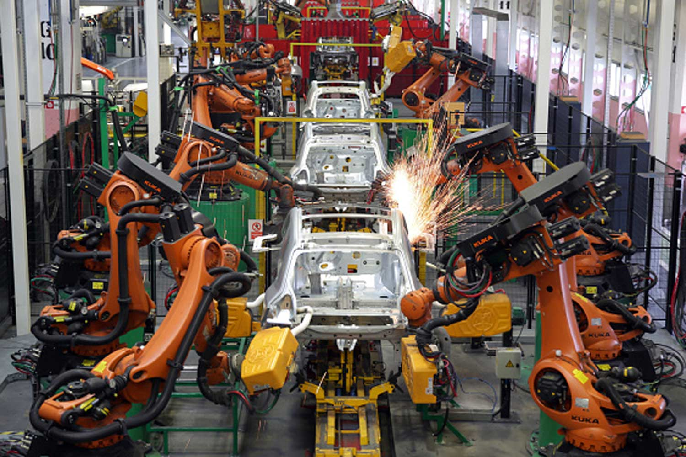

Introduction |
Overview |
Applications |
The World Health Organization estimates that two thirds of the global population lack access to imaging and radiology diagnostics . Thoracic imaging techniques such as digital chest radiography have the major advantage to be easy to use and affordable, even in developing or underdeveloped areas. It consists of 2D images and several billions have already been stored on picture archiving and communication systems (PACS) and linked to radiological reports. However, there is a shortage of experts who can interpret chest radiographies, even when imaging equipment is available, which opens tremendous perspectives for the impact of artificial intelligence applied to thoracic imaging. The first application of artificial intelligence is workflow optimization, by detecting CXR with possible abnormalities that should be read first among all CXR of the work list. Using density and texture-based features, Kao et al. developed a CAD system to automatically determine abnormal chest examinations in the work list of radiologists interpreting chest examinations. The turnaround time for reporting abnormal CXR was reduced by 44 % . CAD can be used for specific detection tasks on chest radiograph, such as detection of tuberculosis, pneumonia or lung nodule, and even more advances tasks such as multiple disease detection are being developed as well .
Cars rely on driving algorithms to get mapping from multiple sensors built into it to determine the path of the path, and the typical sensor "lidar" system, which is similar to radar, and stereoscopic vision system, geographic positioning system (GPS), and the recognition system Visual on things, and real-time positioning system. This is Google, one of the most prominent companies that are involved in automotive technologies, and they started working in this field since 2009 and spent a lot of money in it, the fruits of which were the launch of a new model for a self-driving car in May 2014 that does not include a steering wheel, a pedal or a brake, or fully autonomous . According to the accident reports issued by Google, its test cars were involved in 14 collisions, the error occurred in 13 of them among other drivers, while the first accident to be held responsible for the vehicle software occurred in 2016. In March 2017, Uber's self-driving car was involved in an accident in Tempe, Arizona, which caused it to overturn on either side.
Since Robotics is the field concerned with the connection of perception to action, Artificial Intelligence must have a central role in Robotics if the connection is to be intelligent. Artificial Intelligence addresses the crucial questions of what knowledge is required in any aspect of thinking how should that knowledge be represented; and how should that knowledge be used. Robotics challenges AI by forcing it to deal with real objects in the real world. Techniques and representations developed for purely cognitive problems, often in toy domains, do not necessarily extend to meet the challenge. Robots combine mechanical effectors, sensors, and computers. AI has made significant contributions to each component. We review AI contributions to perception and reasoning about physical objects. Such reasoning concerns space,
 